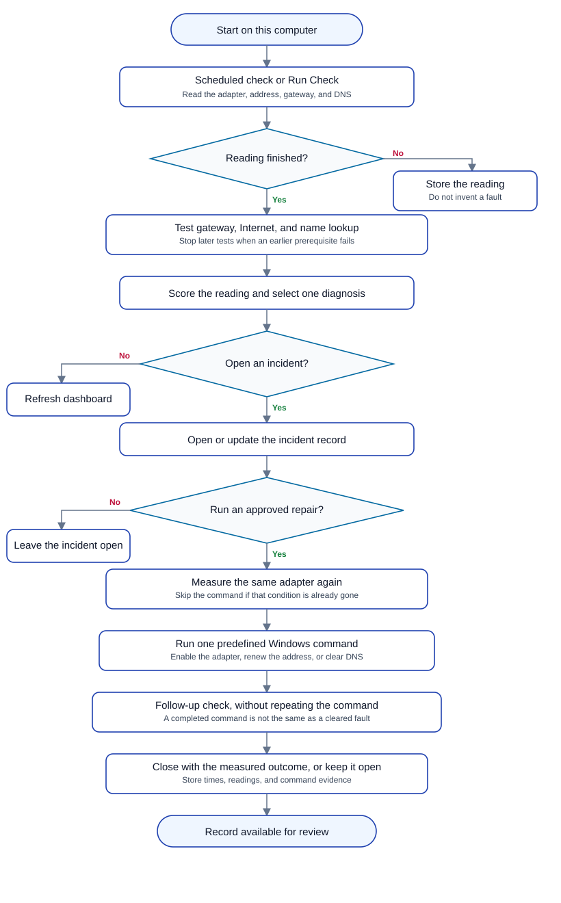
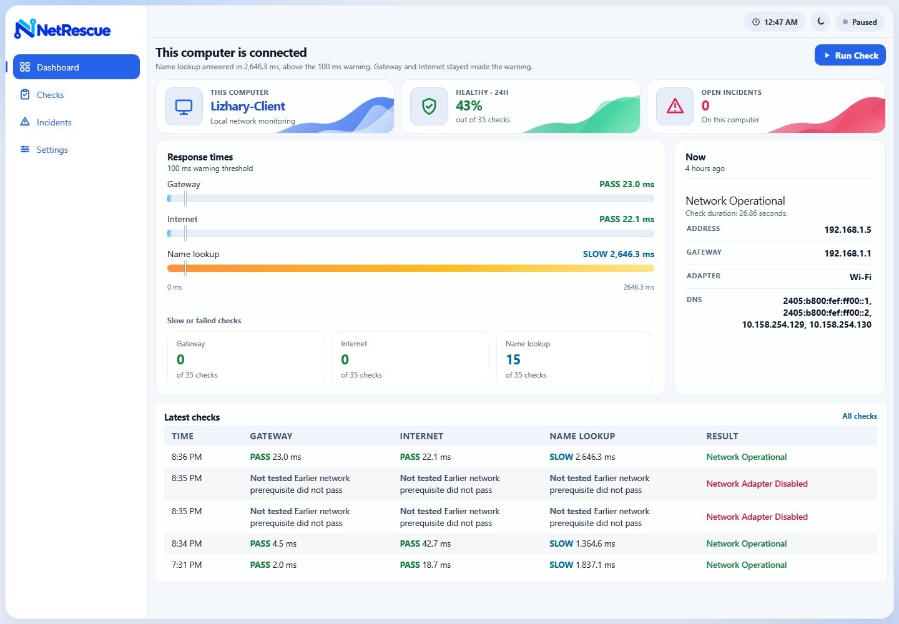
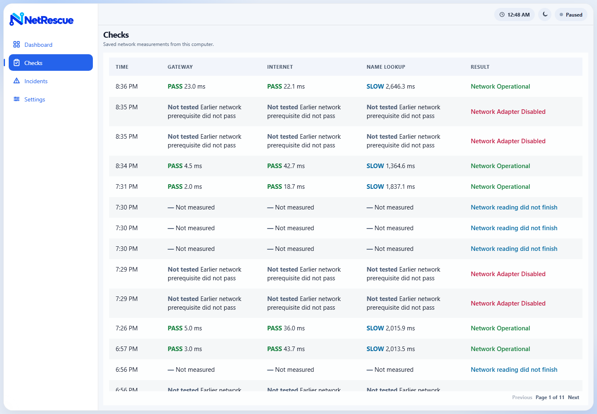
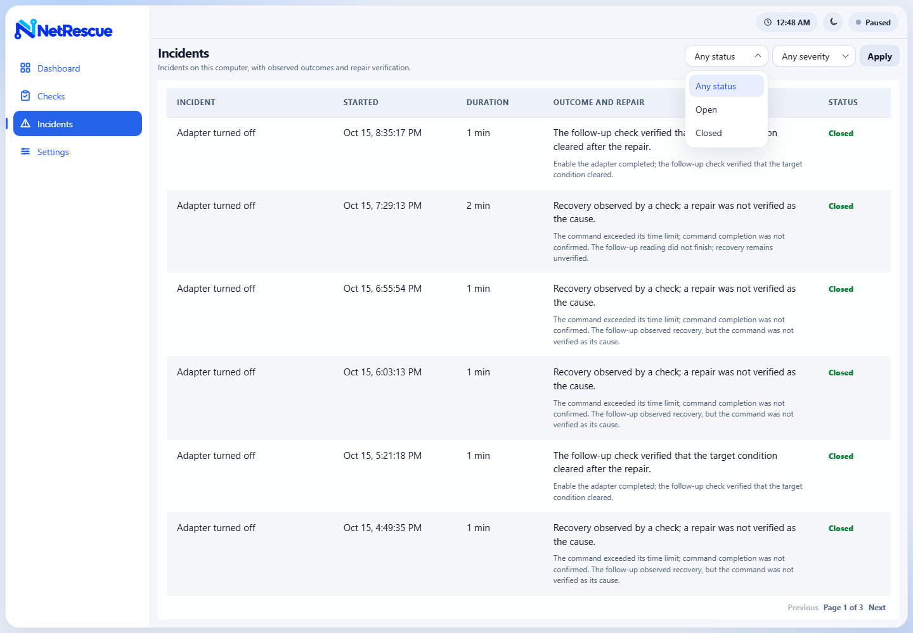
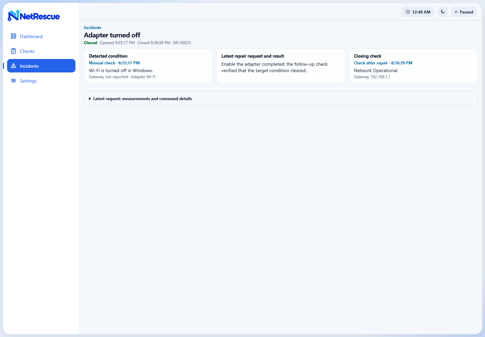
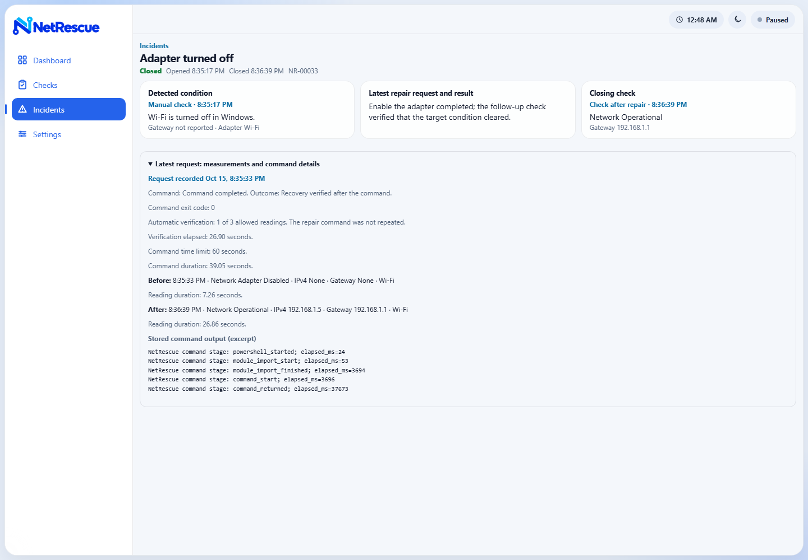
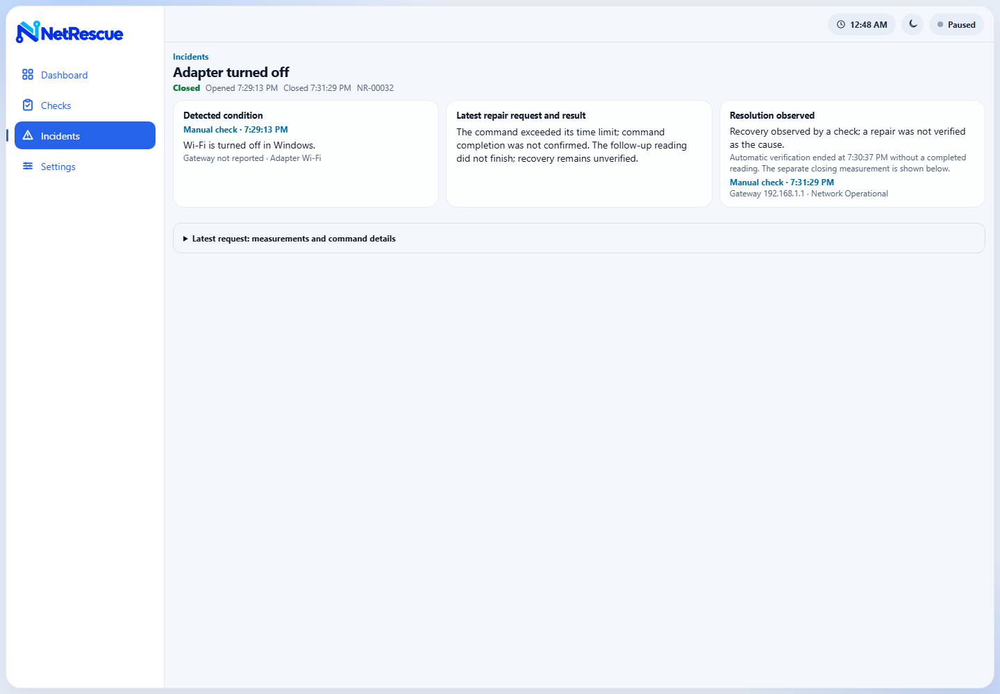
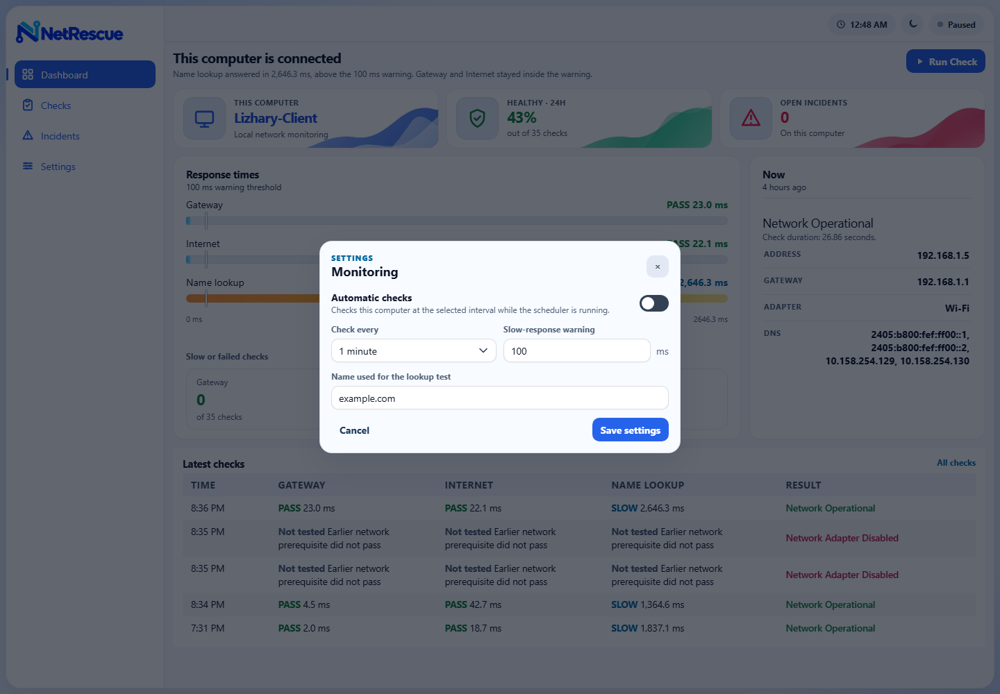

Documentation submission
Local network diagnostic and safe recovery utility
The project files did not include the examination PDF, so the student name, course, and instructor are left blank. Write those on this page before printing or exporting to PDF.
B Introduction
A computer can lose its network connection for several ordinary reasons. The adapter may be turned off, Windows may not receive a usable address, the gateway may not answer, name lookup may fail, or the connection may answer too slowly. Finding which of those is true usually means repeating the same checks by hand, and a repair command can finish without proving that the original problem has cleared.
NetRescue CIT addresses that need on the Windows computer where it is installed. It measures the local adapter and connection, names the first condition that explains the reading, keeps a history of checks and incidents, and can run a small set of approved repairs. After a repair it measures again. A completed command and a recovered connection are recorded as two separate facts.
C Objectives
To provide a local application that measures, explains, records, and safely repairs the network connection of the computer on which it runs.
D Application description
NetRescue CIT is a local monitoring console for one Windows 10 or Windows 11 computer. Its purpose is to replace repeated manual troubleshooting with a measured record: what was wrong, when it was seen, what repair was requested, and whether a later check showed that the condition had cleared.
The intended user is the person administering that computer. The application does not discover or manage other computers on the network. The browser is opened on the same machine, at http://127.0.0.1:8000/.
A check begins by asking Windows for the adapter and its configuration. If that reading does not finish, NetRescue stores the incomplete result and does not invent a network fault from it. When the reading finishes, the application tests the gateway first, then the path beyond the gateway, then name lookup. A later test is not treated as a separate failure when an earlier requirement has already failed. Response time is compared with the warning threshold in Settings.
The diagnosis updates the dashboard. When the condition should be tracked, NetRescue opens an incident and keeps the opening measurement. The user may run the approved repair for that incident. NetRescue checks the same adapter again before the command. If the condition is already gone, or Windows is no longer on that adapter, the command is not run. Otherwise it runs one predefined action, then takes follow-up readings. The incident closes only when the recorded outcome supports closure. The measurements and command details remain available on the incident.
E Features
The dashboard summarizes this computer: whether it is connected, how many of the last 24 hours of checks were healthy, and how many incidents are open. Response-time bars show gateway, Internet, and name lookup against the warning threshold. A current-status panel shows the address, gateway, adapter, and DNS servers. The latest checks appear in a table with colored results.
Run Check starts a measurement immediately. When the scheduler is running and automatic checks are enabled, NetRescue also measures at the selected interval. Pausing automatic checks does not remove the manual check.
Each finished reading receives one result. The order covers an unsupported system, an unfinished reading, a disabled adapter, a missing cable or Wi-Fi link, a missing adapter, an automatic private address, a missing IPv4 address, a missing or unreachable gateway, a manual address that cannot be renewed, an external-path failure, a name-lookup failure, elevated latency, and a healthy connection.
The Checks page lists saved measurements. Each row shows the time and the gateway, Internet, and name-lookup result. A test that was not run explains that an earlier requirement did not pass. The Result column uses green, blue, or rose text for a normal, slow, or failed outcome.
The Incidents page lists each detected condition with its start time, duration, outcome, repair statement, and open or closed status. Status and severity can be filtered. Opening a row shows the detected condition, one repair result, and the closing measurement when the case is finished. If recovery was not verified, the page states that separately.
The repairs are limited to enabling the adapter, renewing the address, and clearing the DNS cache. Each one is tied to the condition that calls for it. After the command, NetRescue reads the network again and does not repeat the command during those retries. The incident page can be opened to show the exit code, time limits, before-and-after readings, and the stored command excerpt.
Settings control automatic checks, the interval, the slow-response warning, and the name used for the lookup test. The console has a light theme and a dark theme. The light theme is shown in the screenshots.
F Tools and technologies
| Tool or technology | Role in NetRescue CIT |
|---|---|
| PHP 8.2 | Server-side language for the application and its tests. |
| Laravel 12 | Application framework: routing, MVC structure, validation, Eloquent, Blade, and the scheduler. |
| Blade | HTML templates for the dashboard, checks, incidents, and settings. |
| HTML and CSS | Page structure and the visual design, including both themes. |
| JavaScript | Theme selection, menus, modals, and the incident record window. |
| MySQL | Stores checks, incidents, recovery evidence, and monitoring settings. |
| Eloquent | Maps those records to application models. |
| Windows PowerShell | Reads the adapter configuration and runs the approved repair commands. |
| PHPUnit | Automated tests for diagnosis, incidents, and repair evidence. Windows calls are mocked in those tests. |
Composer installs the PHP packages. The interface does not depend on a front-end framework. External connectivity is tested against configured addresses; the application does not call a third-party monitoring service.
G MVC implementation
Laravel keeps the request path in routes, the screen in Blade views, the stored records in models, and the request handling in controllers. Measurement, diagnosis, and repair rules live in service classes that the controllers call. That keeps the controllers from containing the network rules themselves.
All console routes use the local.console middleware, so the pages are served for this computer.
| Method and path | Name | Controller action |
|---|---|---|
GET / | dashboard | DashboardController |
GET /checks | checks.index | HealthCheckController@index |
POST /health-checks | health-checks.store | HealthCheckController@store |
GET /history | history.index | IncidentController@index |
GET /incidents/{incident} | incidents.show | IncidentController@show |
POST /incidents/{incident}/recover | incidents.recover | RecoveryController@store |
POST /incidents/{incident}/retest | incidents.retest | HealthCheckController@retest |
PATCH /settings | settings.update | MonitorSettingController@update |
GET /status | status | StatusController |
Device identifies this installation’s computer and links its history.HealthCheck stores one measurement: adapter facts, probe results, timings, diagnosis, and score.Incident stores a detected condition, its opening and closing checks, status, and resolution.RecoveryAction stores one repair request, its command result, verification result, and the related checks.MonitorSetting stores the interval, automatic-check switch, warning threshold, and lookup-test name.DashboardController prepares the summary, response bars, current status, and latest checks.HealthCheckController lists checks and starts a manual check or a result check.IncidentController lists incidents and shows one incident, including the panel used by the record window.RecoveryController accepts an approved repair request.MonitorSettingController validates and saves monitoring settings.StatusController returns the current local status for the page refresh.The shared frame is layouts/app.blade.php, which holds the side menu, theme control, settings window, and repair confirmation. The screens are dashboard/index, checks/index, history/index, and incidents/show. The incident story is shared by incidents/case and incidents/panel. Tables, status marks, and icons are Blade components.
NetworkHealthService runs a check through NetworkProbeService, HealthScoreCalculator, DiagnosticEngine, and IncidentManager. RecoveryService performs the guarded repair and calls RecoveryCommandRunner for the Windows command. LocalSummaryService builds the dashboard figures from this computer’s records only.
H Program flow
The diagram shows the path from a check on this computer through diagnosis, an incident when one is required, and an approved repair when the user requests one. Side paths keep an unfinished reading, a healthy result, and an incident with no repair from being described as something they are not.

I User interface and screenshots
The screenshots were taken from the running application in light mode on October 16, 2026. The computer name on the dashboard is the name reported by Windows for this machine.






